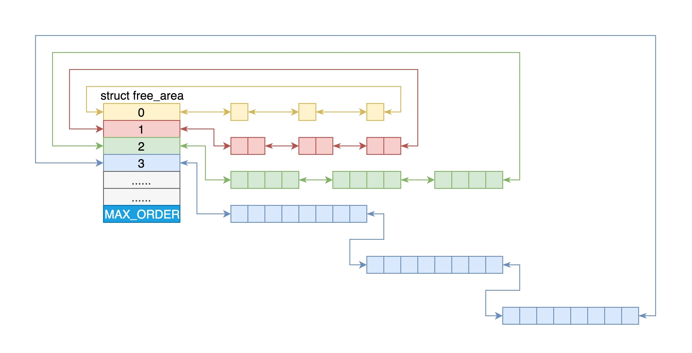
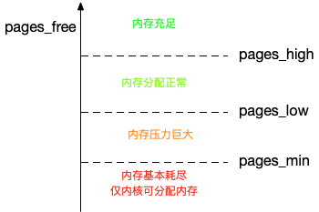

物理内存管理¶
页和区¶
页（page）是内核物理内存管理的基本单位，每页通常包含4KB的空间。内核将物理内存划分成众多固定大小的页，主要是为了提升内核在内存分配和回收方面的效率，可以更加灵活地处理内存请求，优化资源分配，并简化了内存寻址和映射的过程，同时也为虚拟内存的管理提供了便利。struct page结构体表示页，该定义的简化版如下：
struct page {
unsigned long flags;
atomic_t _count;
atomic_t _mapcount;
unsigned long private;
struct address_space *mapping;
pgoff_t index;
struct list_head lru;
void *virtual;
};
flags：存放页的状态，是不是脏页，是不是锁定在内存中等，每一位单独表示一种状态，定义在<linux/page-flags.h>中。
_count：存放页的引用计数，当页被分配给一个或多个进程时，这个计数器会增加。当页被释放时，计数器减少。直到计数器降至0，页才能被回收。
_mapcount：用于记录页表项映射到该物理页的次数。这通常用于共享内存页，多个进程可能映射到同一个物理页。
mapping：指向一个address_space结构的指针，这个结构体用于描述与文件相关的内存映射信息。如果页属于文件缓存，这个字段将指向相应的address_space结构。
index：表示页在映射的文件中的偏移量，即页在文件中的索引号。
lru：一个双向链表节点，用于将页链入到各种链表中，比如活跃链表、不活跃链表等。这是内核实现页置换算法（如LRU）的一部分。
virtual：页在虚拟内存中的地址。
为了更好地管理不同类型的内存和优化内存分配策略，内核还将页划分为不同的区(zone)，通常划分为以下几个区：
-
ZONE_DMA：用于DMA操作的内存区，通常位于物理内存的低地址部分。
-
ZONE_DMA32：与ZONE_DMA类似，但适用于32位地址的DMA操作。
-
ZONE_NORMAL：普通的内存区，可以由内核和用户空间进程使用。
-
ZONE_HIGHMEM：高端内存区，用于处理超过直接映射范围的内存。
区的使用和分布与体系结构密切相关，内核将页划分为区，就可以根据用途进行分配。区的划分没有物理意义，只是为了方便管理而采取的一种逻辑分组。
Note
大多数内核和用户空间的分配使用ZONE_NORMAL即可。
页的分配与释放¶
内核提供了一些以页为单位的连续内存分配与释放的函数，也被称为低级页分配器：
| 函数 | 描述 |
|---|---|
| alloc_page(gfp_mask) | 只分配一页，返回指向页的指针 |
| alloc_pages(gfp_mask, order) | 分配2order个页，返回指向第一页的指针 |
| __get_free_page(gfp_mask) | 只分配一页，返回指向其逻辑地址的指针 |
| __get_free_pages(gfp_mask, order) | 分配2order个页，返回指向第一页逻辑地址的指针 |
| get_zero_page(gfp_mask) | 只分配一页，填充为0，返回指向其逻辑地址的指针 |
| __free_pages(page, order) | 传入页的指针，释放2order个页 |
| free_pages(addr, order) | 传入第一页的逻辑地址，释放2order个页 |
| free_page(addr) | 释放单张页 |
Warning
页的分配和释放必须对应使用，一旦传递了错误的参数，系统就会崩溃！在获得页之后，必须对返回值进行检查以确认内核正确分配了页。
字节的分配与释放¶
kmalloc()¶
kmalloc()与用户空间的malloc()类似，都是分配以字节为单位的一块内存，区别在于kmalloc()多了一个flags参数：
Note
使用kmalloc()函数分配的内存只能使用kfree()函数释放。
该函数返回一个指向内存块的指针，至少有size大小。所分配的内存区在物理上是连续的且不清零。除非没有足够的内存可用，否则内核总能分配成功。kmalloc()分配函数总是调用__get_free_pages()来分配内存，通常来说其最大只能分配32个页，也就是128K大小。
当然，在对kmalloc()调用之后，你还是需要检查返回值是否为NULL：
不管是在页分配函数还是在kmalloc()中，都用到了分配器标志。标志分为三类：行为修饰符、区修饰符和类型标志。类型标志组合了前两者，简化了修饰符的使用，我们只需要知道类型标志即可。内核中最常用的就是GFP_KERNEL，该标志适用于绝大多数内存分配场景。这种分配方式可能会引起睡眠，所以只能用在可以重新安全调度的进程上下文中。
另一个截然相反的标志是GFP_ATOMIC，这个标志表示不能睡眠的内存分配。与GFP_KERNEL相比，它分配成功的机会较小，但是在一些无法睡眠的代码中，也只能选择GFP_ATOMIC。GFP_DMA标志表示分配器必须满足从ZONE_DMA进行分配的请求，该标志用在需要DMA的内存的设备驱动程序中。在编写的绝大多数代码中，要么是GFP_KERNEL，要么是GFP_ATOMIC，其他标志用到的情况极少，就不做说明了。下面这张表格总结了标志的使用场景。
| 情形 | 相应标志 |
|---|---|
| 可以睡眠的进程上下文 | GFP_KERNEL |
| 不可以睡眠的进程上下文 | GFP_ATOMIC |
| 中断处理程序 | GFP_ATOMIC |
| 软中断 | GFP_ATOMIC |
| tasklet | GFP_ATOMIC |
| 可以睡眠的DMA内存 | （GFP_DMA | GFP_KERNEL） |
| 不可以睡眠的DMA内存 | （GFP_DMA）| GFP_ATOMIC |
值得注意的是，尽管kmalloc()函数在没有空闲内存时会失败，但是内核总会尽可能满足这个内存分配请求。因此，如果一下子分配了很多内存，系统的响应性能就会降低——当系统为了满足kmalloc()的分配请求，会试图与磁盘交换尽可能多的页空间导致系统卡死。
基于页的分配策略能够更加精细地控制内存区域，而kmalloc()函数会因为分配粒度的问题浪费一定数量的内存。
kzalloc()¶
kzalloc()等价于先用kmalloc()申请空间，然后调用memset()对内容清零：
vmalloc()¶
vmalloc()函数与kmalloc()函数在内存分配方面具有相似的功能，但它们在物理地址连续性方面有所不同。与kmalloc()保证分配的内存页在物理地址上连续不同，vmalloc()分配的内存页在物理地址上可以是不连续的。这种现象与用户空间内存分配函数malloc()类似，malloc()返回的页在进程的虚拟地址空间中是连续的，但并不保证这些页在物理地址上也是连续的。
在大多数情况下，只有硬件设备需要访问物理地址连续的内存页。这是因为许多体系结构的硬件设备存在于内存管理单元（MMU）之外，它们无法处理虚拟地址。因此，硬件设备所使用的任何内存区域都必须是物理上连续的内存块。
相比之下，软件使用的内存块则没有这样的严格要求。软件通常可以通过虚拟地址来访问内存，即使这些虚拟地址对应的物理内存不是连续的。这是因为操作系统通过页表管理机制，可以将不连续的物理内存映射到连续的虚拟地址空间中。这种机制使得软件可以高效地使用分散的物理内存资源，而无需关心内存的物理布局。
由于vmalloc()需要对不连续的页进行专门的映射处理，所以其性能不如kmalloc()。仅在不得已的情形下才会使用，比如为了获得大块内存时。因为kmalloc()分配的内存块是连续的，当系统中的内存碎片较多时，尝试分配大块内存可能会失败，而vmalloc()则不会。
vmalloc()的分配和释放接口如下：
这两个函数都会睡眠，因此不能在中断上下文中使用。
伙伴系统¶
伙伴系统（Buddy System）是一种内存分配算法，它被用于操作系统的内存管理。在这种系统中，内存被分成多个大小相等的块，每个块的大小都是2的幂次方。这些块被组织成一颗树结构，其中每个块都是另一个块的“伙伴”。
内核把所有的空闲页分组为11个页块链表，每个块链表分别包含很多个大小的页块，有 1、2、4、8、16、32、64、128、256、512 和 1024 个连续页的页块。最大可以申请1024个连续页，对应 4MB大小的连续内存。

当操作系统需要分配内存时，它会根据请求的大小找到最接近的且大小足够的块进行分配。如果分配的块比所需的大小大，那么这个块会被分成两个大小相等的子块，其中一个子块被用来满足内存分配请求，而另一个则成为它的“伙伴”。
在伙伴系统中，当需要分配一个特定大小的内存块时，系统会按照以下步骤操作：
-
首先，确定所需内存块的大小。例如，如果需要128个页的块，系统会检查128个页的空闲块链表。
-
如果在128个页的链表中没有找到空闲块，系统会寻找下一个更大的内存块尺寸，即256个页的块。
-
如果在256个页的链表中找到了空闲块，系统会将这个块分成两个大小相等的块，每个块包含128个页。其中一个块被分配给请求者，另一个块作为新的空闲块插入到128个页的链表中。
-
如果256个页的链表中也没有空闲块，系统会继续检查更大的块，比如512个页的块。
-
如果在512个页的链表中找到了空闲块，系统会将这个块分裂成三个块：两个128个页的块和一个256个页的块。其中一个128个页的块被分配出去，其余两个块分别插入到相应的链表中。 通过这种方式，伙伴系统可以有效地管理内存，确保内存分配既高效又灵活。
当内存块被释放时，系统会检查是否有相邻的伙伴块同样空闲，如果两者都是空闲的，它们会被合并回原来的大块，从而减少内存碎片。
slab分配器¶
在内核编程中，分配和释放数据结构是一项极为常见的工作。为了高效地处理这些数据结构的频繁分配与回收，开发者们通常会利用空闲链表来优化这一过程。空闲链表本质上是一个预先分配的数据结构块的集合，这些块都处于可用状态。当系统需要新的数据结构实例时，可以直接从空闲链表中获取一个现成的块，这样就避免了实时内存分配的消耗。使用完毕后，该数据结构实例被归还到空闲链表中，而不是被直接释放。在这种机制下，空闲链表充当了一种特殊的对象高速缓存，它能够快速地存储和提供那些经常被使用的数据结构类型。这样的设计不仅提升了内存管理的效率，还减少了内存碎片，是一种非常实用的编程技巧。
Linux内核提供了slab分配器，它通过将不同类型的对象组织到各自的高速缓存组中，来优化这些对象的分配和回收。每个高速缓存组专门用于存储一种特定类型的对象。例如，一个高速缓存可能用于管理进程描述符（task_struct结构），而另一个则用于索引节点对象（struct inode）。
slab分配器的作用
-
提供小内存分配
-
维护常用对象的缓存
-
提高CPU硬件缓存的利用率
slab可以处于三种状态之一：满、部分满或空。满的slab意味着所有对象都已分配出去，空的slab则表示所有对象都未被分配，而部分满的slab则包含了已分配和未分配的对象。当内核请求新对象时，优先从部分满的slab中分配。如果没有，则从空的slab中分配。如果连空的slab都没有，就会创建新的slab。
每个高速缓存都使用kmem_cache结构体表示。这个结构包含三个链表：slabs_full、slabs_partial、slabs_empty，这些链表包含了高速缓存中的所有slab。struct slab用来描述每个slab。
slab层的管理是在每个高速缓存的基础上，通过内核提供的统一接口来完成的。创建和撤销高速缓存，并在高速缓存内分配和释放对象。复杂的高速缓存机制和slab的管理完全由内部机制来处理，用户无须关心。
高速缓存的使用统计情况可以从/proc/slabinfo中获得。其中形如kmalloc-xxx的slab称为通用型slab，含有具体名字的slab称为专用slab，用来为特定的结构体分配内存。
struct kmem_cache *kmem_cache_create(const char *name, size_t size,
size_t align, unsigned int flags,
void (*ctor)(void *)) //创建一个新的高速缓存
int kmem_cache_destroy(struct kmem_cache *cachep) //撤销一个高速缓存
void *kmem_cache_alloc(struct kmem_cache *cachep, gfp_t flags) //从缓存中分配对象
void kmem_cache_free(struct kmem_cache *cachep, void *objp) //释放一个对象，将它返回给原先的slab
在文件<kernel/fork.c>中，我们可以看到许多高速缓存的实现：
/* SLAB cache for signal_struct structures (tsk->signal) */
static struct kmem_cache *signal_cachep;
/* SLAB cache for sighand_struct structures (tsk->sighand) */
struct kmem_cache *sighand_cachep;
/* SLAB cache for files_struct structures (tsk->files) */
struct kmem_cache *files_cachep;
/* SLAB cache for fs_struct structures (tsk->fs) */
struct kmem_cache *fs_cachep;
/* SLAB cache for vm_area_struct structures */
static struct kmem_cache *vm_area_cachep;
/* SLAB cache for mm_struct structures (tsk->mm) */
static struct kmem_cache *mm_cachep;
由于fork()系统调用用来创建一个新的task_struct结构体，使用高速缓存可以大大提升系统的性能。
Swap机制¶
当系统内存资源紧张时，内核会对一些内存进行回收。对于文件页，大部分可以直接回收，如果是脏页则需要先写入磁盘。对于匿名页，内核引入了Swap机制来回收。
Swap机制是内核中的一种内存管理技术，用于处理内存不足的情况。当系统中的实际物理内存不足以满足程序运行需求时，操作系统会将部分暂时不用的内存页面移到Swap空间中，从而释放物理内存，以便继续运行其他程序。它包括换出和换入两个过程。
- 换出，就是把进程暂时不用的内存数据存储到磁盘中，并释放这些数据占用的内存。
- 换入，就是将磁盘中的数据重新加载到内存中。
当有新的大块内存分配请求而剩余内存不足时，内核就会回收一部分内存，尽可能地满足新内存请求，这个过程被称为直接内存回收。
除了直接内存回收，还有一个专门的内核线程kswapd0用来定期回收内存。为了衡量内存的使用情况，内核定义了三个内存阈值，分别是页最小阈值（pages_min）、页低阈值（pages_low）和页高阈值（pages_high），剩余内存，则用pages_free表示。

一旦剩余内存小于页低阈值，就会触发内存的回收。
在NUMA架构下，每个处理器都会被划分到不同的Node下，而每个Node都有自己的本地内存空间。因此，内核需要根据当前Node的内存使用情况来决定回收的目标。当某个Node内存不足时，内核可以从其他Node寻找空闲内存，也可以从本地回收内存，具体回收模式在/proc/sys/vm/zone_reclaim_mode文件中进行配置。
/proc/sys/vm/swappiness选项用来调整使用Swap的积极程度，从0~100，数值越大越积极使用Swap，也就是更倾向于回收匿名页；数值越小越消极使用Swap，也就是更倾向于回收文件页。